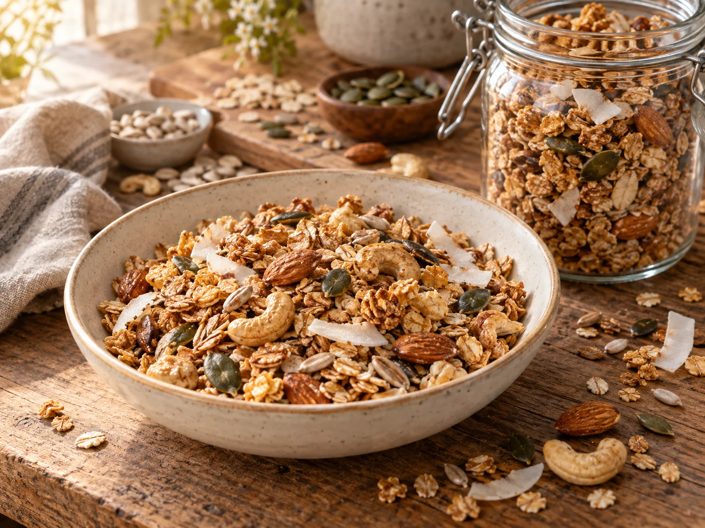

Was Süßes geht immer · Frühstück & Müsli
Gesundes Müsli
von Evelyn W.

Evelyns knuspriges Ofenmüsli verbindet Hafer- und Roggenflocken mit reichlich Nüssen, Kernen und Kokos. Akazienhonig und Zimt geben ihm eine feine Süße und ein warmes Aroma.
Zutaten
500 gWeiche Haferflocken
80 gRoggenflocken
80 gKokosflocken
120 gMandeln, geschält
60 gCashewkerne
80 gSonnenblumenkerne
60 gKürbiskerne
125 gButter, zimmerwarm
200 gAkazienhonig
Nach GeschmackZimt
Zubereitung
- Den Backofen auf 160 °C Ober-/Unterhitze vorheizen und ein großes Backblech mit Backpapier auslegen.
- Haferflocken, Roggenflocken, Kokosflocken, ganze Mandeln, ganze Cashewkerne, Sonnenblumenkerne und Kürbiskerne in eine große Schüssel geben. Zimmerwarme Butter, Akazienhonig und Zimt hinzufügen und alles gründlich miteinander vermischen.
- Die gesamte Müslimischung gleichmäßig auf dem vorbereiteten Backblech verteilen.
- Das Müsli etwa 15–20 Minuten rösten und dabei gelegentlich wenden. Gut beobachten und aus dem Ofen nehmen, sobald es gleichmäßig goldgelb ist.
- Das Müsli auf dem Blech vollständig auskühlen lassen und anschließend in eine ausreichend große, gut verschließbare Box füllen.
Tipp
Das Müsli bräunt nach dem Herausnehmen noch etwas nach. Lieber einen Moment zu früh aus dem Ofen holen und vollständig auskühlen lassen – dabei wird es erst richtig knusprig.